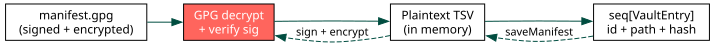

Manifest Format¶
1 Overview¶
The manifest maps opaque blob IDs to target file paths. It is stored encrypted
at .vault/manifest.gpg and decrypted on every operation.

2 Format¶
The plaintext manifest is a TSV (tab-separated values) file:
# vault-manifest-v1
a1b2c3d4e5f67890 ~/.secret/api_key.txt
fedcba9876543210 ~/.config/app/credentials.json
First line: version header (
# vault-manifest-v1)Subsequent lines:
<id>\t<path>Blank lines and lines starting with
#are ignored
2.1 Fields¶
id16-character lowercase hex string, generated from 8 bytes of cryptographic randomness (
std/sysrand).pathTarget file path. Paths under
$HOMEare stored with~/prefix for portability across machines. Absolute paths outside$HOMEare stored as-is.
3 Blob files¶
Each manifest entry has a corresponding .vault/<id>.gpg file containing the
GPG-encrypted file contents. The --set-filename "" flag is used during
encryption to avoid leaking the original filename in GPG metadata.
4 Directory layout¶
.vault/
config # recipient configuration (plaintext)
manifest.gpg # encrypted manifest
a1b2c3d4e5f67890.gpg # encrypted blob
fedcba9876543210.gpg # encrypted blob
Only .vault/ is committed to git. The plaintext files live at their target
paths outside the repository.